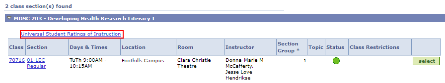

Tips and Tricks
Disclaimer
These views are shared from students. Please ensure you meet with your advisor for final decisions. We are not liable for any problems you have following these tips.
First Year
-
Orientation Week
The best tip is showing up to Oweek. You will learn more about university in this week then you will ever do in a classroom. It is also so much fun. SO GO SIGN UP!
-
Scheduling
I bet you have never herd of DNDN before. It is a great site to schedule your courses visually. My Ucalgary also has one called "schedule builder", but I still like DNDN more.
Although this only applies to BHSc students, but when scheduling your courses ensure you leave enough time to commute between foothills and main campus. I usually allow myself atleast 30-60 minutes.
While you are adding courses to build your schedule make sure you keep in mind the professor that is teaching the course. It can make or break a course for people. You can always look at Universal Student Ratings of Instruction(USRI) or Rate my Prof. Just make sure you use these sources wisley as the ones that cry are often heard the loudest.
 -
Textbooks
I know that in high school you got all the textbook you needed, but this is university. Textbooks can be helpful but don't run out and spend hundreds of dollars on textbook that you won't use. Go to your first class or ask a friend that has taken the course to know if you really need the textbook. If so visit bound and copied or join the University of Calgary Textbook Center group on Facebook to buy used books. If all else fails, then shop at the bookstore.
-
Room Finder
Do you find yourself in a maze because UofC is so big. Then use Room Finder. Just select the building and enter the room number to find your next class. It even works for the foothills campus. Now you will never be lost.
-
Study Spaces
Need a place to study. Just check out the Study Spaces by the SU. Next time you find TFDL full just try these other spots for stress free studying. Also, the Health Sciences library is also another great library that often gets overlooked.
-
Printing
For many of your labs you will need to print worksheets. But what if you forget to print it the night before. Well if you put some funds ($5) on your UNICARD you can do those last-minute printing at the library. It has saved my butt a couple of times. To put funds on your UNICARD just go to the library's front desk.
-
Emails
Go to office.com and login with your university email and password. You will always be redirected to the UofC login (This is okay). After you login, click on outlook to access your email. You can also download office products for free as well to help you with your studying. Lastly read your email from Jennifer Logan as she sends out great opportunities for you to join.
-
Wifi
You can connect to both Eduroam and Airuc-Secure for internet. To login use your UofC email and password.
Second Year
I have no tips in second other than stick with your friends through the tough times.
Third Year
-
Safety Courses
Make sure you do your safety courses for MDSC 408 or you will not be able to perform your labs. Your professors would remind you but make sure you do them.
Third Year
-
Graduating
I am proud of you that you have made it this far in the BHSc program. Now you need to get ready to graduate. So make sure you get your Grad pictures taken and apply to convocate. Don't miss out out!
Offered by the Faculty
-
Feasby Lounge
We have the best lounge in all of UofC. Even med school students use our lounge because it is better. The lounge is a great place to socialize or play some competitive pool or ping pong matches. If you are not good at the end of the year, what are you doing with your life!
-
Lockers
Lockers are free at foothills. Just bring a lock and choose a locker and it would be all yours till you graduate. The lockers are especially nice when you have MDSC 408 labs.
-
Sleeping Area
Do you need to catch some "ZZZ" in between classes? Check out the sleeping area at foothills campus near _____________. Now stop reading and go to sleep.
-
Buddy Program
Who doesn’t want a friend. The program allows you to connect with students in upper years to help guide you through your university journey. They can help you with picking courses, you can present to them and they can give your feedback or just sit down for a cup of coffee. Trust me we don't bite.
-
Mentorship Program
I am not even going to discuss this one. Just look at for emails begening in september. More Details
Research
The BHSc program is grounded upon research. Thus, many students in the program keep their summers full by doing research. For research you need two things. A professor that has a project for you and funding so you get paid during the summer.
-
Funding
A foundational part of research is seeking out funding that would pay you over the summer. Funding applications often start January and end mid Febuary. Thus it is important to know the professor you are working with in Decemeber so both of you can fill out applications for funding early. The common funding options are NSERC, Markin USRP and a single application form to apply to Alberta Innovates, O'Brien Centre Summer Studentships, Alberta Cancer Foundation, and/or PURE. Please note that there are many other funding resources that can be specific to your research, thus ask your professor if any are available.
-
Share Your Research
A great way to showcase what you have done in your summer is to present at a conference or a symposium. The BHSc program hosts its own symposium in the month of October. Thus check your emails for details. Another option is to apply to the Undergrad Research Symposium. Just like funding applications, many symposiums are specefic to your research. Thus I advise you to ask your professor if any are available.
-
IGEM / CalWHO
-
MDSC 507/528
Do you want to do research but for marks. You can with MDSC 507 (1 semester) and MDSC 528 (2 semesters) which can be done over the summer or during the school year. I would advise you to meet with Jennifer Logan a month before the start of the semester to sort out the details.
Fitness
Did you know that a healthy body leads to a healthy brain!
-
Main Campus Gym
Do you want gains? Well the main campus gym is the right spot. There are lockers you can rent or pay 25 cents for one time uses. Some people even get lockers from the SU and just walk to the gym (although it can be far). Get the lockers soon because they usually run out.
Sign up for Level Up as well. It is a great program to earn free prices while promoting you to stay active during the year.
-
Foothills Campus Gym
The foothills gym, is also another option. You can signup for it and you will get a key. It is not very fancy but you can workout at foothills.
If you have tips that you will like to add please contact kourosh.banaeianzade@ucalgary.ca.